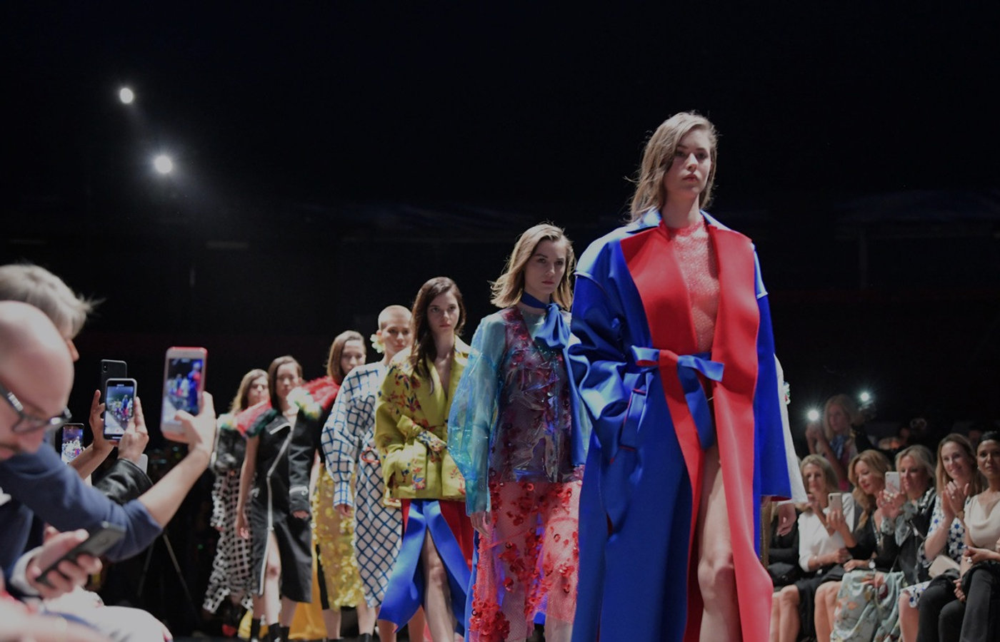

For five days this April, the Principality of Monaco became the unlikely conscience of the fashion calendar. The fourteenth edition of Monte-Carlo Fashion Week — running 14–18 April at venues from the Yacht Club de Monaco to the Grimaldi Forum — placed sustainability, emerging talent and responsible creativity at the centre of a programme that felt genuinely urgent, staged against a backdrop of superyachts and Rivièra light.
Where the big four fashion weeks deal in spectacle and commercial power, MCFW has carved itself a different role. Under the direction of Federica Nardoni Spinetta and the Chambre Monégasque de la Mode, the event has become a proving ground for designers who treat material innovation and ethical production not as talking points but as first principles. This year’s edition made the argument more forcefully than ever.
The week opened on Monday evening with a reception at the Cour d’Honneur of Monaco’s Mairie, where Mayor Georges Marsan set the tone with a speech underscoring the principality’s commitment to fashion as an expression of ethics, inclusivity and sustainability. The “Cocktail Monaco Woman” followed — a networking event that has become one of the week’s signature moments, drawing an international crowd of editors, buyers and emerging designers to the town-hall courtyard.
The shows: from the Yacht Club to the Grimaldi Forum
Tuesday brought the first runway presentations to the Yacht Club de Monaco, Norman Foster’s angular waterside clubhouse providing a dramatic setting for collections that ranged from the sculptural precision of Daphne Milano to the material experimentation of Diana Mara, whose use of deadstock fabrics and vineyard-waste fibres drew sustained applause. Genny staged an evening show accompanied by a private cocktail, its collection a study in architectural draping that played beautifully against the harbour light filtering through the Yacht Club’s glass walls.
The Italian contingent was strong throughout. A dedicated “Made in Italy” segment spotlighted Isabel Fargnoli, while the Fashion Hub at Marius Monaco showcased emerging labels including Crida Milano, Di Iorio, Baiah and Yasmina Al Jaramani — names that bear watching. Twinset and Kalfar both presented collections that balanced commercial appeal with traceable supply chains, and Beach & Cashmere Monaco offered a local perspective on resort-season dressing that felt neither frivolous nor forced. Russian-born designer Yasya Minochkina brought a darkly romantic sensibility, her sculptural evening pieces providing a counterpoint to the week’s prevailing emphasis on restraint.
There was also Hyperlight Optics by Zepter, whose eyewear innovation segment demonstrated that sustainability in fashion need not be limited to textiles. The brand’s bio-acetate frames and blue-light-filtering lenses pointed toward a broader definition of responsible design — one that encompasses the accessories category too.
This edition represents a key moment to promote a more responsible fashion industry, combining aesthetics, innovation and ethical values.
Federica Nardoni Spinetta, President, Chambre Monégasque de la ModeSustainability as substance
Wednesday was given over to ideas rather than hemlines. The Yacht Club hosted a series of conferences and panel discussions in partnership with the Prince Albert II of Monaco Foundation, lending institutional weight to conversations that too often drift into platitude elsewhere. A panel on bio-fabrics featured Célia Roussin, who has developed textiles from vineyard waste, and Runa Ray of Kelptex, whose seaweed-derived yarn has moved from prototype to production. Both demonstrated that circular-economy materials can match the hand and drape of conventional luxury fabrics — a threshold moment for the industry.
The afternoon brought a “Face to Face” session with Leonardo Maria Del Vecchio, Chief Strategy Officer of EssilorLuxottica and president of Ray-Ban, who spoke about the intersection of industrial innovation and social responsibility. Del Vecchio, who also leads the OneSight EssilorLuxottica Foundation’s Italian operations, framed luxury as an obligation to provide universal access to sight — a perspective that elevated the conversation well beyond fashion. A second talk with Alessandro Binello, CEO of the Quadrivio Group, explored the economics of responsible fashion investment under the heading “Fashion’s Next Chapter.”

The Fashion Awards ceremony at the Grimaldi Forum’s Grande Verrière. Photography courtesy of Monte-Carlo Fashion Week / Vanessa Von Zitzewitz
New talent and the closing night
Thursday evening belonged to the next generation. The “De midi à minuit” show at Espace Léo Ferré presented collections designed by fashion-design students from Florence’s Polimoda, with staging by students of Monaco’s own École Supérieure d’Arts Plastiques — now in its third year of offering a Fashion Scenography programme. It was a shrewd piece of programming: a reminder that the future of responsible fashion depends on the schools that form its practitioners. The Monte-Carlo Fashion Awards ceremony followed that evening at the Grimaldi Forum’s Grande Verrière, honouring designers who combine innovation with responsibility. The “Positive Change Award” spoke to the week’s central conviction: that fashion can be a force for social good, not merely a decorative one.
The grand finale came on Friday at the Grimaldi Forum, where British designer Macy Grimshaw closed the week with a collection that justified the organisers’ faith in emerging talent. A graduate of Central Saint Martins already worn by international celebrities, Grimshaw presented a sharp, considered body of work that balanced sculptural silhouettes with sustainable fabrication. It was the kind of debut that promises a career worth watching — and, for MCFW, the kind of closing statement that confirms its growing reputation as the place where responsible fashion meets high ambition.
Also threaded through the week was the seventh edition of Projet Communal Junior, in which young participants developed a charitable fashion-show concept under the mentorship of industry professionals. It was a small but telling detail: Monte-Carlo Fashion Week is building its audience as carefully as its programme.
What sets MCFW apart is not scale — it will never rival the volume of Paris or Milan — but clarity of purpose. In a season when sustainability risks becoming a word drained of meaning, Monaco offered five days of evidence that it need not be. The Yacht Club and the Grimaldi Forum are not modest settings; that the conversations held inside them were equally uncompromising is what makes this fourteenth edition worth paying attention to.